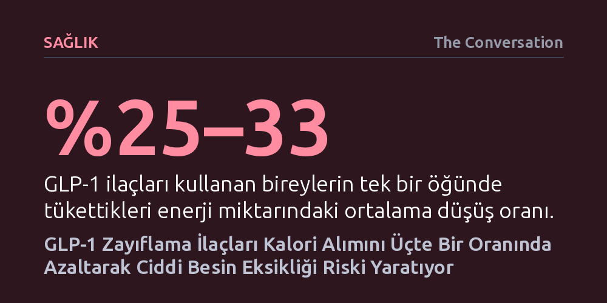

SAGLIK · The Conversation · 2026-10-21
Ozempic ve Mounjaro gibi GLP-1 ilaçları kalori alımını üçte bir oranında düşürerek kilo verdirirken, bulantı ve sindirim sorunları nedeniyle besin eksikliği riski doğuruyor. İştahın hızla kesilmesi, yetersiz beslenme ve kas kaybını önlemek için bilinçli bir diyet yönetimini zorunlu kılıyor.
Kilo vermeyi sadece kalori kısmaktan ibaret gören yaygın algıyı kırarak, iştahı kesen ilaçlar kullanılırken bilinçli beslenilmediğinde zayıflamanın kas kaybı ve ağır besin yetersizliğiyle sonuçlanabileceğini gösteriyor.

Semaglutid (Ozempic, Wegovy) ve tirzepatid (Mounjaro) gibi GLP-1 grubu ilaçlar, son yıllarda tip 2 diyabet ve obezite yönetiminde küresel bir dönüşüm başlattı. Yalnızca Avustralya'da yarım milyonu aşkın insan bu tedavileri diyabet kontrolü amacıyla kullanırken, kilo kaybı ve metabolik nedenlerle başlayanlar eklendiğinde tablo çok daha geniş bir kitleyi kapsıyor. Klinik veriler, bu ilaçların vücut ağırlığını kontrol altına almada ve kan şekerini dengelemede şimdiye dek geliştirilmiş en etkin farmakolojik araçlar arasında yer aldığını doğruluyor.
Ancak bu yaygın ilginin gölgesinde kalan kritik bir sorun var: İlaçlar yalnızca kilo kaybı sağlamakla kalmıyor, kişilerin besinle olan ilişkisini ve aldıkları gıda miktarını kökten biçimde kısıtlıyor. İştahın bıçak gibi kesilmesi ilk bakışta arzu edilen bir sonuç gibi görünse de vücudun ihtiyaç duyduğu temel makro ve mikro besinlerin karşılanamaması, göz ardı edilen bir yetersiz beslenme riskini beraberinde getiriyor.
İnsan bedeni yemek yedikten hemen sonra sindirim kanalından GLP-1 ve GIP adı verilen doğal tokluk hormonları salgılar. Bu moleküller beynin ödül merkezine ve hipotalamusa ulaşarak tokluk sinyali verir ve gıdalardan alınan tatmin hissini belirler. Doğal hormonlar kanda salgılandıktan sonra birkaç dakika içinde enzimler tarafından parçalanarak etkisini kaybeder. İlaç endüstrisi ise bu yapıyı laboratuvar ortamında modifiye ederek enzimatik yıkıma dirençli hale getirdi; böylece haftada tek bir enjeksiyonla günlerce süren hormon taklidi mümkün oldu.
Bu uzatılmış etki mekanizması, klinik deneylerde belirgin kilo kayıpları yaratıyor. Haftalık 1 mg semaglutid kullanan yetişkinler plaseboya kıyasla ortalama 6,24 kilogram, 15 mg tirzepatid kullananlar ise 10,8 kilograma kadar daha fazla zayıflıyor. Bir yılı aşan çalışmalarda hastaların başlangıç ağırlıklarının yüzde 10 ila 15'ini kaybettikleri görülüyor. Vücut ağırlığının yüzde 5'inden fazlasını kaybetmek kalp-damar ve metabolizma sağlığını belirgin biçimde iyileştirse de dozu artırmak her zaman daha iyi sonuç vermiyor; aksine tolere edilebilirliği ciddi şekilde düşürüyor.
İlaç dozunun artırılmasıyla birlikte sindirim sistemi yan etkileri hızla tırmanışa geçiyor. 33 binden fazla hastayı kapsayan incelemelerde en yaygın şikayetin mide bulantısı olduğu belgelendi. 48 klinik çalışmanın analizi; kullanıcıların yüzde 21'inde mide bulantısı, yüzde 10'unda ishal, yüzde 9'unda kusma ve hazımsızlık, yüzde 8'inde ise kabızlık geliştiğini ortaya koyuyor. Nadir de olsa pankreatit, bağırsak tıkanması, kas kütlesi kaybı (sarkopeni) ve kadınlarda kusma/ishale bağlı doğum kontrol hapı emiliminin düşmesi gibi komplikasyonlar da bildirilmiş durumda.
Bu sindirim rahatsızlıklarının ve hormon baskısının doğrudan neticesi ise gıda tüketiminin dramatik biçimde çökmesidir. 50 bin katılımcılı 41 klinik araştırmanın incelendiği bir çalışmada, şaşırtıcı şekilde yalnızca iki çalışmanın hastaların gerçekte ne yediğini ölçtüğü belirlendi. Standart açık büfe testlerinde, GLP-1 kullanan yetişkinlerin tek bir öğünde aldıkları enerjinin yüzde 25 ila 33 oranında azaldığı görüldü. Gün boyu süren deneylerde ise günlük kalori alımındaki düşüşün semaglutidde 3.036 kilojul, tirzepatidde ise 3.581 kilojul seviyesine ulaştığı hesaplandı.
Günlük enerji alımının üçte bir oranında düşmesi hızlı kilo kaybı sağlasa da protein, lif, vitamin ve mineral girdisini de tehlikeli eşiklerin altına itiyor. Yetersiz beslenme yalnızca gıdaya erişemeyenlerin değil, iştahı ilaçla yapay biçimde bastırılan modern bireylerin de yüzleştiği bir tabloya dönüşüyor. Nitekim 2025 yılında ünlü şarkıcı Robbie Williams'ın kilo verme ilacı kullanırken yemek yemeyi kesmesi sonucu C vitamini eksikliğine bağlı skorbüt hastalığına yakalandığını açıklaması, riskin ulaştığı boyutu gözler önüne seren somut bir uyarı oldu.
Öte yandan, sindirim şikayetleri nedeniyle ilacı bırakan hastalarda hem verilen kiloların hem de kan şekeri ve kolesterol risk faktörlerinin hızla eski başlangıç seviyelerine döndüğü biliniyor. Bu kısır döngüye düşmemek için GLP-1 tedavisi alanların porsiyonları küçülürken besin yoğunluğu yüksek gıdaları tercih etmesi, besin günlüğü tutarak alımlarını izlemesi ve süreci mutlaka bir hekim ile beslenme uzmanı eşliğinde planlaması gerekiyor.